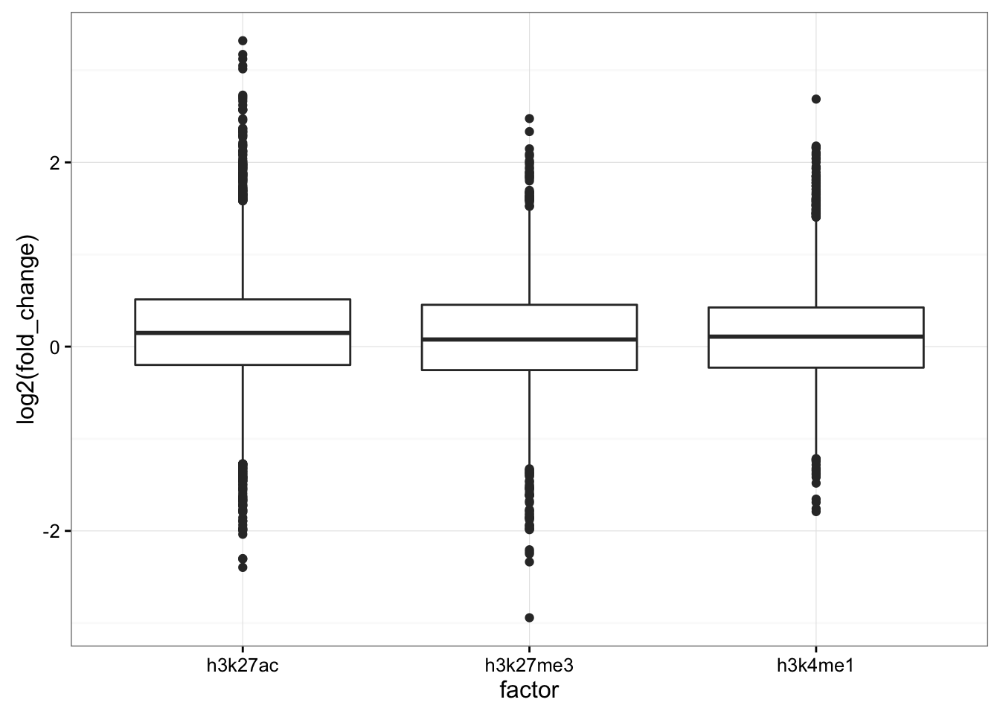

Project: Repressed Enhancers
Author: Jeff Johnston
Generated: Tue Aug 09 2016, 01:22 PM
| factor | peak_type | replicate.m | replicate.de |
|---|---|---|---|
| h3k27ac | broad | 1 | 1 |
| h3k27me3 | broad | 1 | 1 |
| h3k4me1 | narrow | 1 | 1 |
| factor | median_log2_fold_change |
|---|---|
| h3k27ac | 0.14886661 |
| h3k27me3 | 0.07741999 |
| h3k4me1 | 0.10841570 |

For reproducibility, this analysis was performed with the following R/Bioconductor session:
R version 3.3.1 (2016-06-21)
Platform: x86_64-apple-darwin13.4.0 (64-bit)
Running under: OS X 10.11.6 (El Capitan)
locale:
[1] en_US.UTF-8/en_US.UTF-8/en_US.UTF-8/C/en_US.UTF-8/en_US.UTF-8
attached base packages:
[1] stats4 parallel stats graphics grDevices utils datasets
[8] methods base
other attached packages:
[1] readr_1.0.0 dplyr_0.5.0 rtracklayer_1.32.2
[4] GenomicRanges_1.24.2 GenomeInfoDb_1.8.3 IRanges_2.6.1
[7] S4Vectors_0.10.2 BiocGenerics_0.18.0 digest_0.6.10
[10] yaml_2.1.13 pander_0.6.0 magrittr_1.5
[13] ggplot2_2.1.0 setwidth_1.0-4
loaded via a namespace (and not attached):
[1] Rcpp_0.12.6 RStudioConsoleRender_0.1.0
[3] formatR_1.4 plyr_1.8.4
[5] XVector_0.12.1 bitops_1.0-6
[7] tools_3.3.1 zlibbioc_1.18.0
[9] tibble_1.1 evaluate_0.9
[11] gtable_0.2.0 DBI_0.4-1
[13] rstudioapi_0.6 stringr_1.0.0
[15] knitr_1.13 Biostrings_2.40.2
[17] grid_3.3.1 Biobase_2.32.0
[19] R6_2.1.2 XML_3.98-1.4
[21] BiocParallel_1.6.4 rmarkdown_1.0.9001
[23] GenomicAlignments_1.8.4 scales_0.4.0
[25] Rsamtools_1.24.0 htmltools_0.3.5
[27] assertthat_0.1 SummarizedExperiment_1.2.3
[29] colorspace_1.2-6 labeling_0.3
[31] stringi_1.1.1 lazyeval_0.2.0
[33] RCurl_1.95-4.8 munsell_0.4.3